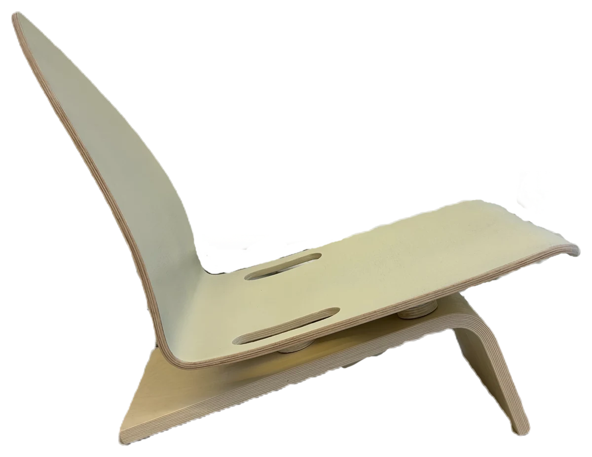
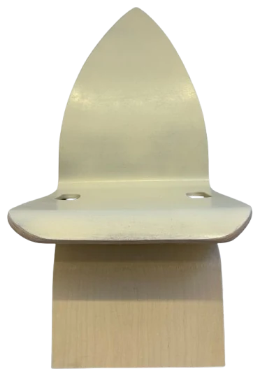
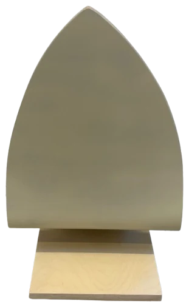
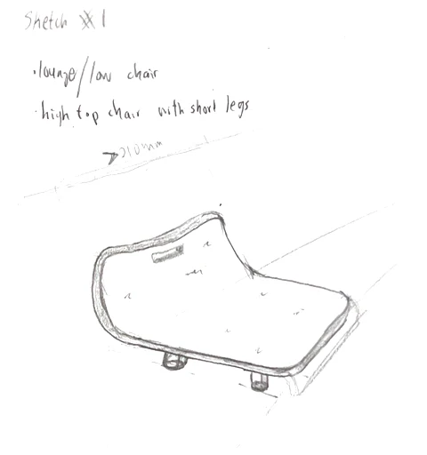
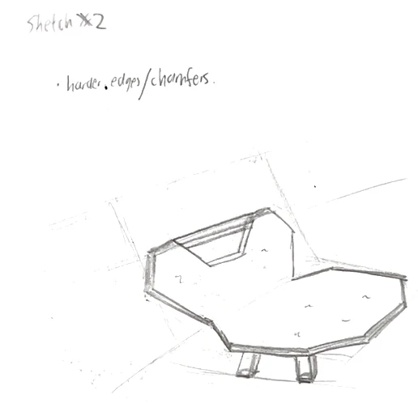
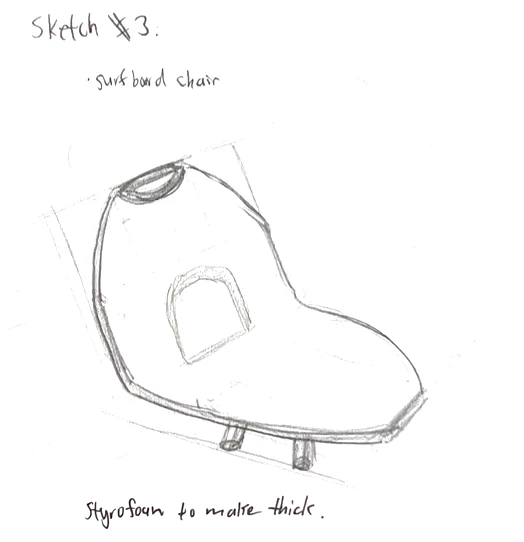
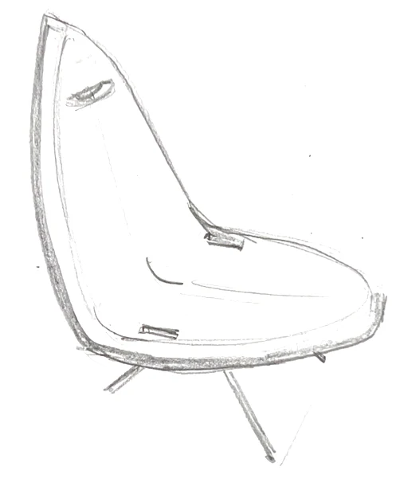
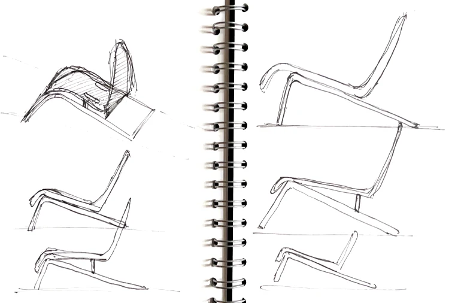

Furniture Design, Copenhagen
Surf Chair
The problemEveryone got the same factory-made plywood chair. Our job: give it a story.

The flat plywood reshaped into the flowing curve of a surfboard: light enough to carry to the beach, comfortable enough to stay.
01
Design
Ergonomic angles and a flexible backrest make it comfortable and durable. The warm beige finish and visible wood grain bring to mind sand and sea. It's light and portable, so it works indoors or out.



02
Preliminary sketches




